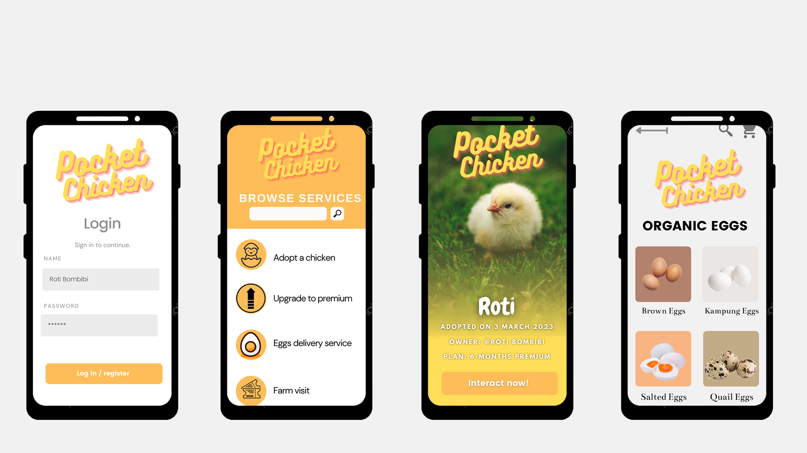
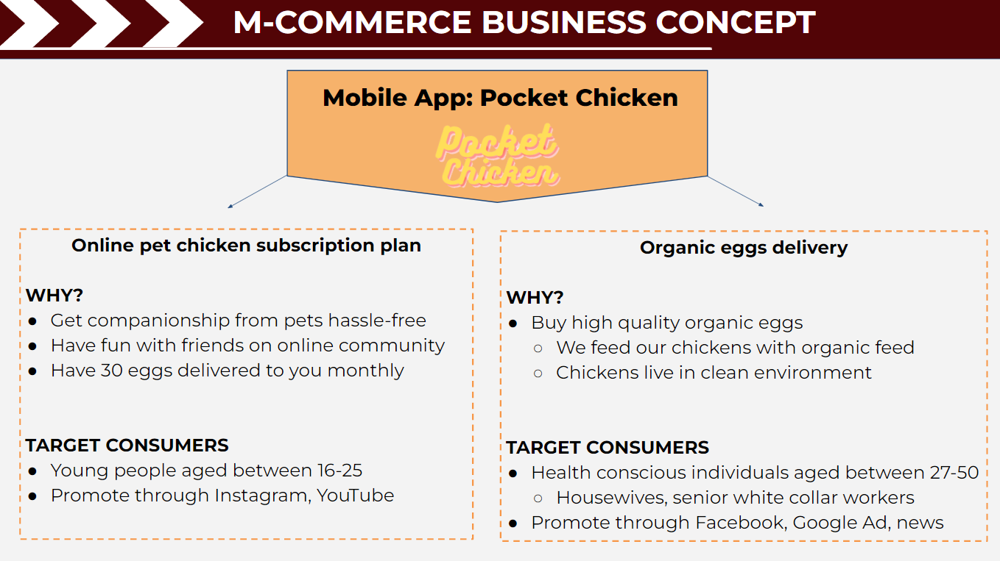

AMSIB Challenge 2022 Recap
Introduction
AMSIB Challenge is a cross-country business case study competition open to Malaysian and Chinese university students. It is organized by the Association of Malaysian Students in Beijing (AMSIB) registered under the Education Malaysia-Beijing.
The theme of the AMSIB Challenge 2022 focused on topics like: “small and medium-sized enterprises (SME)”, “mobile-commerce” and “COVID-19 pandemic”. The task that was given to participants was to identify a SME that is established in China or Malaysia, which has been affected by the pandemic, and find a way to implement mobile-commerce in their business so that they can increase profitability or develop a new business model.
Competition Prep
The AMSIB Challenge has only been held twice before, with this year’s being the third annual competition. The second one in 2021 was held online, and I managed to find a replay of last year’s finals on Facebook, which gave me a good idea of what to prepare for, the key to winning the competition, and how to answer well in the judge Q&A session.
Our team consisted of 4 members whom are studying in Computer Science, Business Administration and Math majors.
Preliminary Round
For the preliminary round, we had nine days to complete a 20-page proposal consisting of the following:
- Table of Contents
- Executive Summary
- Chosen SME / Company Introduction
- Market Analysis
- Mobile-commerce Business Concept
- 3-Years Execution Plan
- Financial Plans
- References
Our idea was to build a mobile app named “Pocket Chicken” for an existing poultry farm in Melaka, Malaysia. This app would help the farm manage online orders for eggs and chicken, and be able to easily arrange deliveries to customers. This would be helpful for them in the era of pandemic, as customers couldn’t shop in-store as usual during lock-down.


Final Round
We were one of the 10 teams that were then selected into the final round. The organizers had also invited a few mentors to provide us with coaching before the final round starts.
The coaching was divided into two sessions, the first one was a group session where all the mentors were to give comments and guidance to the 10 final teams based on the previous proposal. For the second time, each final team got to pick a mentor for one-on-one coaching, and have the chance to make changes to the final proposal.
For the finals, we had to make a 20-page presentation deck to showcase our work to judges. The key to winning this round was to design beautiful presentation decks that could summarize the research and analysis we had done on Malaysia’s poultry market, our execution plans, and the estimated budget plans. We also had to be well prepared and quickly respond to any questions that the judges could possible throw in our way.
Impromptu Round
After the final round, the judges selected the final 6 teams to enter the impromptu round. In this session, we only had 90 minutes to read the new given materials, understand the new case task, do research and analysis, and finally organize our findings and solutions into a presentation deck.
Results
Our team ended up winning 2nd Runner-Up (3rd Place) in AMSIB Challenge 2022. It was an enriching experience for me as I learnt a lot on how to complete market analysis and writing financial plans.
I think the essential skills needed to win in this competition are:
- The ability to come up with innovative ideas
- The ability to quickly understand new concepts
- The ability to articulate your thoughts and ideas accurately